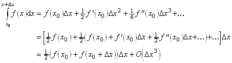
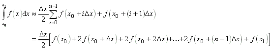
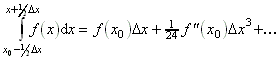
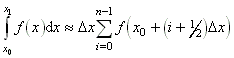
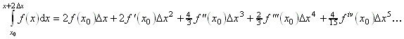
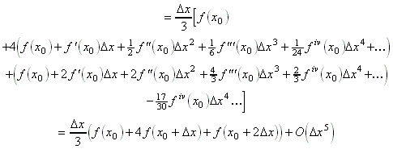
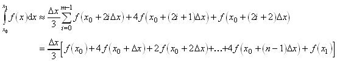
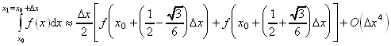
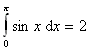

.
.
Title Page
Contents
1. Introduction
2. Key Idea
3. Root finding in one dimension
4. Linear equations
5. Numerical integration
6. First order ordinary differential equations
7. Higher order ordinary differential equations
8. Partial differential equations
There are two main reasons for you to need to do numerical integration: analytical integration may be impossible or infeasible, or you may wish to integrate tabulated data rather than known functions. In this section we outline the main approaches to numerical integration. Which is preferable depends in part on the results required, and in part on the function or data to be integrated.
If you were to perform the integration by hand, one approach is to superimpose a grid on a graph of the function to be integrated, and simply count the squares, counting only those covered by 50% or more of the function. Provided the grid is sufficiently fine, a reasonably accurate estimate may be obtained. Figure 11 demonstrates how this may be achieved.
Consider the Taylor Series expansion integrated from x0 to x0+Dx:
 . | (46) |
The approximation represented by 1/2[f(x0) + f(x0+Dx)]Dx is called the Trapezium Rule based on its geometric interpretation as shown in figure 12 .
As we can see from equation ( 46 ), the error in the Trapezium Rule is proportional to Dx3. Thus, if we were to halve Dx, the error would be decreased by a factor of eight. However, the size of the domain would be halved, thus requiring the Trapezium Rule to be evaluated twice and the contributions summed. The net result is the error decreasing by a factor of four rather than eight. The Trapezium Rule used in this manner is sometimes termed the Compound Trapezium Rule, but more often simply the Trapezium Rule. In general it consists of the sum of integrations over a smaller distance Dx to obtain a smaller error.
Suppose we need to integrate from x0 to x1. We shall subdivide this interval into n steps of size Dx=(x1-x0)/n as shown in figure 13 .
The Compound Trapezium Rule approximation to the integral is therefore
 . | (47) |
While the error for each step is O(Dx3), the cumulative error is n times this or O(Dx2) ~ O(n2).
The above analysis assumes Dx is constant over the interval being integrated. This is not necessary and an extension to this procedure to utilise a smaller step size Dxi in regions of high curvature would reduce the total error in the calculation, although it would remain O(Dx2). We would choose to reduce Dx in the regions of high curvature as we can see from equation ( 46 ) that the leading order truncation error is scaled by f".
A variant on the Trapezium Rule is obtained by integrating the Taylor Series from x0Dx/2 to x0+Dx/2:
 . | (48) | |
By evaluating the function f(x) at the midpoint of each interval the error may be slightly reduced relative to the Trapezium rule (the coefficient in front of the curvature term is 1/24 for the Mid-point Rule compared with 1/12 for the Trapezium Rule) but the method remains of the same order. Figure 14 provides a graphical interpretation of this approach.
Again we may reduce the error when integrating the interval x0 to x1 by subdividing it into n smaller steps. This Compound Mid-point Rule is then
 , | (49) | |
with the graphical interpretation shown in figure 15 . The difference between the Trapezium Rule and Mid-point Rule is greatly diminished in their compound forms. Comparison of equations ( 47 ) and ( 49 ) show the only difference is in the phase relationship between the points used and the domain, plus how the first and last intervals are calculated.
There are two further advantages of the Mid-point Rule over the Trapezium Rule. The first is that is requires one fewer function evaluations for a given number of subintervals, and the second that it can be used more effectively for determining the integral near an integrable singularity. The reasons for this are clear from figure 16 .
An alternative approach to decreasing the step size Dx for the integration is to increase the accuracy of the functions used to approximate the integrand. Integrating the Taylor series over an interval 2Dx shows
 | (50) |
 |
Whereas the error in the Trapezium rule was O(Dx3), Simpson's rule is two orders more accurate at O(Dx5), giving exact integration of cubics.
To improve the accuracy when integrating over larger intervals, the interval x0 to x1 may again be subdivided into n steps. The three-point evaluation for each subinterval requires that there are an even number of subintervals. Hence we must be able to express the number of intervals as n=2m. The Compound Simpson's rule is then
 , | (51) |
and the corresponding error O(nDx5) or O(Dx4).
Simpson's Rule may be employed in a manual way to determine the integral with nothing more than a ruler. The approach is to cover the domain to be integrated with a triangle or trapezium (whichever is geometrically more appropriate) as is shown in figure 17 . The integrand may cross the side of the trapezium (triangle) connecting the end points. For each arc-like region so created (there are two in figure 17 ) the maximum deviation (indicated by arrows in figure 17 ) from the line should be measured, as should the length of the chord joining the points of crossing. From Simpson's rule we may approximate the area between each of these arcs and the chord as
| (52) | |
remembering that some increase the area while others decrease it relative to the initial trapezoidal (triangular) estimate. The overall estimate (ignoring linear measurement errors) will be O(l5), where l is the length of the (longest) chord.
With the Compound Trapezium Rule we know from section 5.2 the error in some estimate T(Dx) of the integral I using a step size Dx goes like cDx2 as Dx0, for some constant c. Likewise the error in T(Dx/2) will be cDx2/4. From this we may construct a revised estimate T(1)(Dx/2) for I as a weighted mean of T(Dx) and T(Dx/2):
| (53) |
By choosing the weighting factor a = 4/3 we elimate the leading order (O(Dx2)) error terms, relegating the error to O(Dx4). Thus we have
| (54) |
Comparison with equation ( 51 ) shows that this formula is precisely that for Simpson's Rule.
This same process may be carried out to higher orders using Dx/4, Dx/8, … to eliminate the higher order error terms. For the Trapezium Rule the errors are all even powers of Dx and as a result it can be shown that
| () |
A similar process may also be applied to the Compound Simpson's Rule.
By careful selection of the points at which the function is evaluated it is possible to increase the precision for a given number of function evaluations. The Mid-point rule is an example of this: with just a single function evaluation it obtains the same order of accuracy as the Trapezium Rule (which requires two points).
One widely used example of this is Gauss quadrature which enables exact integration of cubics with only two function evaluations (in contrast Simpson's Rule, which is also exact for cubics, requires three function evaluations). Gauss quadrature has the formula
 . | (56) | |
In general it is possible to choose M function evaluations per interval to obtain a formula exact for all polynomials of degree 2M1 and less.
The Gauss Quadrature accurate to order 2M1 may be determined using the same approach required for the two-point scheme. This may be derived by comparing the Taylor Series expansion for the integral with that for the points x0+aDx and x0+bDx:
. | (57) | |
Equating the various terms reveals
| (58) |
the solution of which gives the positions stated in equation ( 56 ).
Consider the integral
 , | (59) |
which may be integrated numerically using any of the methods described in the previous sections. Table 2 gives the error in the numerical estimates for the Trapezium Rule, Midpoint Rule, Simpson's Rule and Gauss Quadrature. The results are presented in terms of the number of function evaluations required. The calculations were performed in double precision.
| No. intervals | Trapezium Rule | Midpoint Rule | Simpson's Rule | Gauss Quadrature |
1 | 1.14189790E+00 | |||
2 | -2.00000000E+00 | 2.21441469E-01 | -6.41804253E-02 | |
4 | -4.29203673E-01 | 5.23443059E-02 | 9.43951023E-02 | -3.05477319E-03 |
8 | -1.03881102E-01 | 1.29090855E-02 | 4.55975498E-03 | -1.79666460E-04 |
16 | -2.57683980E-02 | 3.21637816E-03 | 2.69169948E-04 | -1.10640837E-05 |
32 | -6.42965622E-03 | 8.03416309E-04 | 1.65910479E-05 | -6.88965642E-07 |
64 | -1.60663902E-03 | 2.00811728E-04 | 1.03336941E-06 | -4.30208237E-08 |
128 | -4.01611359E-04 | 5.02002859E-05 | 6.45300022E-08 | -2.68818500E-09 |
256 | -1.00399815E-04 | 1.25499060E-05 | 4.03225719E-09 | -1.68002278E-10 |
512 | -2.50997649E-05 | 3.13746618E-06 | 2.52001974E-10 | -1.04984909E-11 |
1024 | -6.27492942E-06 | 7.84365898E-07 | 1.57500679E-11 | -6.55919762E-13 |
2048 | -1.56873161E-06 | 1.96091438E-07 | 9.82769421E-13 | |
4096 | -3.92182860E-07 | 4.90228564E-08 | ||
8192 | -9.80457133E-08 | 1.22557182E-08 | ||
16384 | -2.45114248E-08 | 3.06393221E-09 | ||
32768 | -6.12785222E-09 | 7.65979280E-10 | ||
65536 | -1.53194190E-09 | 1.91497040E-10 | ||
131072 | -3.82977427E-10 | 4.78341810E-11 | ||
262144 | -9.57223189E-11 | 1.19970700E-11 | ||
524288 | -2.39435138E-11 | 3.03357339E-12 | ||
1048576 | -5.96145355E-12 |
Note that this program is written for clarity rather than speed. The number of function evaluations actually computed may be approximately halved for the Trapezium rule and reduced by one third for Simpson's rule if the compound formulations are used. Note also that this example is included for illustrative purposes only. No knowledge of Fortran or any other programming language is required in this course.
PROGRAM Integrat
REAL*8 x0,x1,Value,Exact,pi
INTEGER*4 i,j,nx
C=====Functions
REAL*8 TrapeziumRule
REAL*8 MidpointRule
REAL*8 SimpsonsRule
REAL*8 GaussQuad
C=====Constants
pi = 2.0*ASIN(1.0D0)
Exact = 2.0
C=====Limits
x0 = 0.0
x1 = pi
C=======================================================================
C= Trapezium rule =
C=======================================================================
WRITE(6,*)
WRITE(6,*)'Trapezium rule'
nx = 1
DO i=1,20
Value = TrapeziumRule(x0,x1,nx)
WRITE(6,*)nx,Value,Value - Exact
nx = 2*nx
ENDDO
C=======================================================================
C= Midpoint rule =
C=======================================================================
WRITE(6,*)
WRITE(6,*)'Midpoint rule'
nx = 1
DO i=1,20
Value = MidpointRule(x0,x1,nx)
WRITE(6,*)nx,Value,Value - Exact
nx = 2*nx
ENDDO
C=======================================================================
C= Simpson's rule =
C=======================================================================
WRITE(6,*)
WRITE(6,*)'Simpson''s rule'
WRITE(6,*)
nx = 2
DO i=1,10
Value = SimpsonsRule(x0,x1,nx)
WRITE(6,*)nx,Value,Value - Exact
nx = 2*nx
ENDDO
C=======================================================================
C= Gauss Quadrature =
C=======================================================================
WRITE(6,*)
WRITE(6,*)'Gauss quadrature'
nx = 1
DO i=1,10
Value = GaussQuad(x0,x1,nx)
WRITE(6,*)nx,Value,Value - Exact
nx = 2*nx
ENDDO
END
FUNCTION f(x)
C=====parameters
REAL*8 x,f
f = SIN(x)
RETURN
END
REAL*8 FUNCTION TrapeziumRule(x0,x1,nx)
C=====parameters
INTEGER*4 nx
REAL*8 x0,x1
C=====functions
REAL*8 f
C=====local variables
INTEGER*4 i
REAL*8 dx,xa,xb,fa,fb,Sum
dx = (x1 - x0)/DFLOAT(nx)
Sum = 0.0
DO i=0,nx-1
xa = x0 + DFLOAT(i)*dx
xb = x0 + DFLOAT(i+1)*dx
fa = f(xa)
fb = f(xb)
Sum = Sum + fa + fb
ENDDO
Sum = Sum * dx / 2.0
TrapeziumRule = Sum
RETURN
END
REAL*8 FUNCTION MidpointRule(x0,x1,nx)
C=====parameters
INTEGER*4 nx
REAL*8 x0,x1
C=====functions
REAL*8 f
C=====local variables
INTEGER*4 i
REAL*8 dx,xa,fa,Sum
dx = (x1 - x0)/Dfloat(nx)
Sum = 0.0
DO i=0,nx-1
xa = x0 + (DFLOAT(i)+0.5)*dx
fa = f(xa)
Sum = Sum + fa
ENDDO
Sum = Sum * dx
MidpointRule = Sum
RETURN
END
REAL*8 FUNCTION SimpsonsRule(x0,x1,nx)
C=====parameters
INTEGER*4 nx
REAL*8 x0,x1
C=====functions
REAL*8 f
C=====local variables
INTEGER*4 i
REAL*8 dx,xa,xb,xc,fa,fb,fc,Sum
dx = (x1 - x0)/DFLOAT(nx)
Sum = 0.0
DO i=0,nx-1,2
xa = x0 + DFLOAT(i)*dx
xb = x0 + DFLOAT(i+1)*dx
xc = x0 + DFLOAT(i+2)*dx
fa = f(xa)
fb = f(xb)
fc = f(xc)
Sum = Sum + fa + 4.0*fb + fc
ENDDO
Sum = Sum * dx / 3.0
SimpsonsRule = Sum
RETURN
END
REAL*8 FUNCTION GaussQuad(x0,x1,nx)
C=====parameters
INTEGER*4 nx
REAL*8 x0,x1
C=====functions
REAL*8 f
C=====local variables
INTEGER*4 i
REAL*8 dx,xa,xb,fa,fb,Sum,dxl,dxr
dx = (x1 - x0)/DFLOAT(nx)
dxl = dx*(0.5D0 - SQRT(3.0D0)/6.0D0)
dxr = dx*(0.5D0 + SQRT(3.0D0)/6.0D0)
Sum = 0.0
DO i=0,nx-1
xa = x0 + DFLOAT(i)*dx + dxl
xb = x0 + DFLOAT(i)*dx + dxr
fa = f(xa)
fb = f(xb)
Sum = Sum + fa + fb
ENDDO
Sum = Sum * dx / 2.0
GaussQuad = Sum
RETURN
END
|
Start of this section
Title Page
Contents